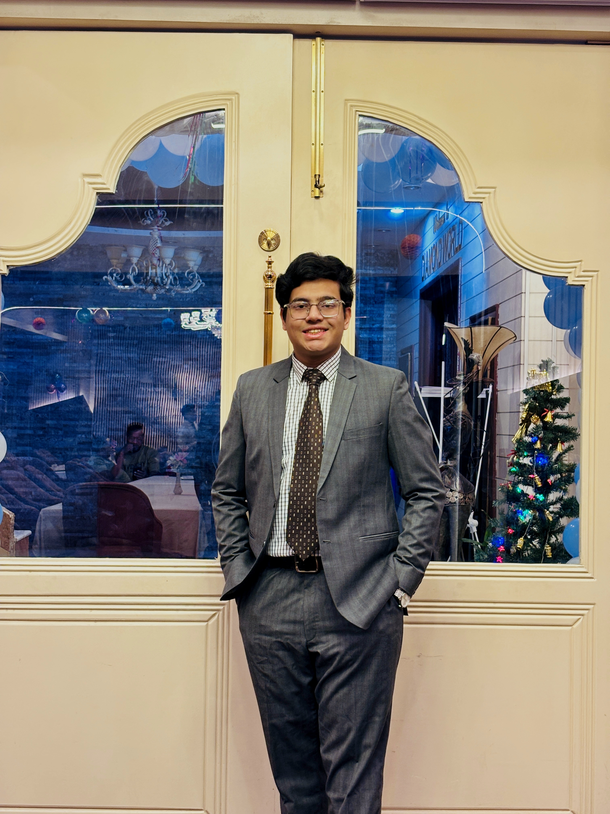
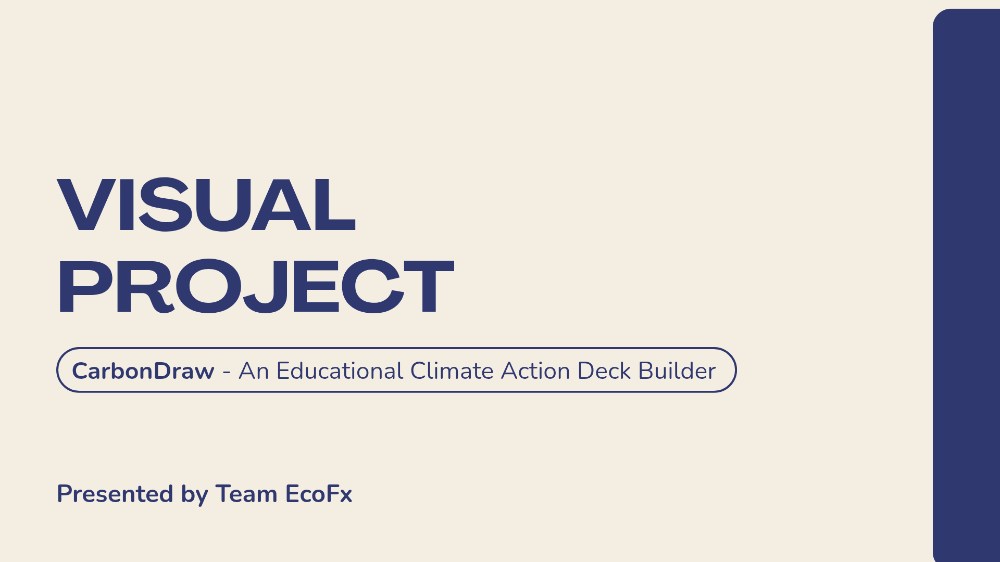
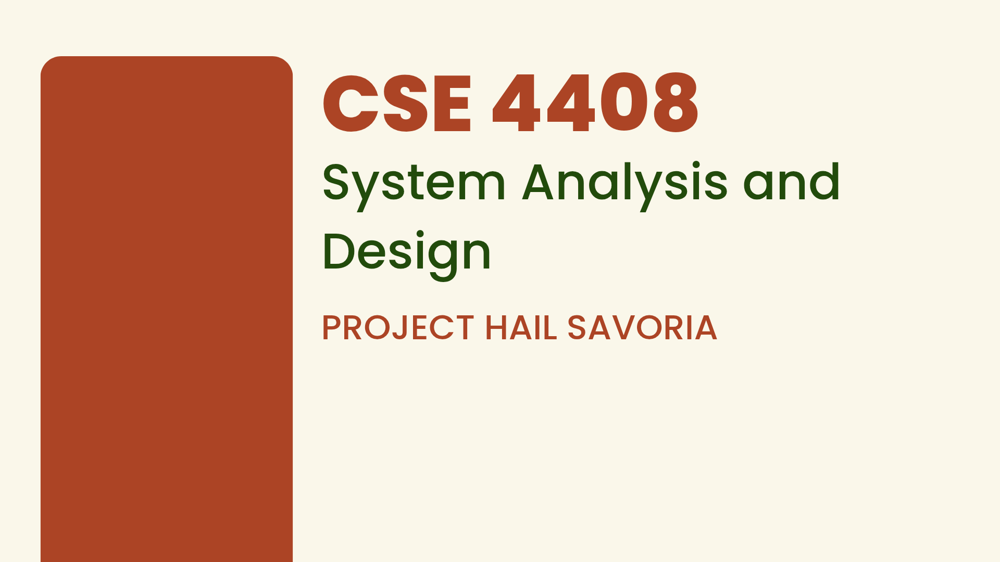
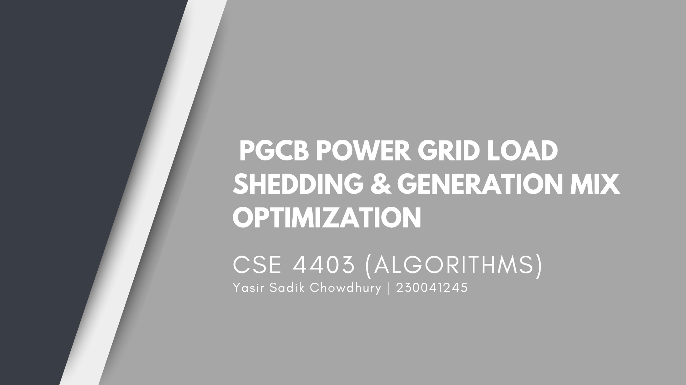
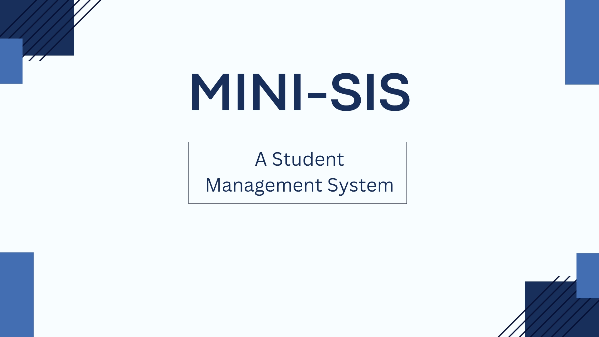
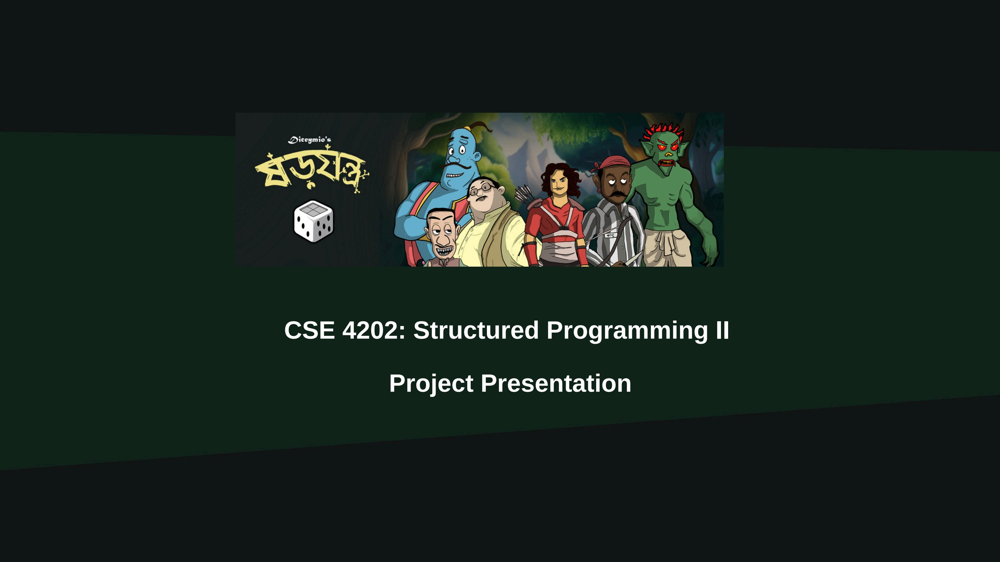
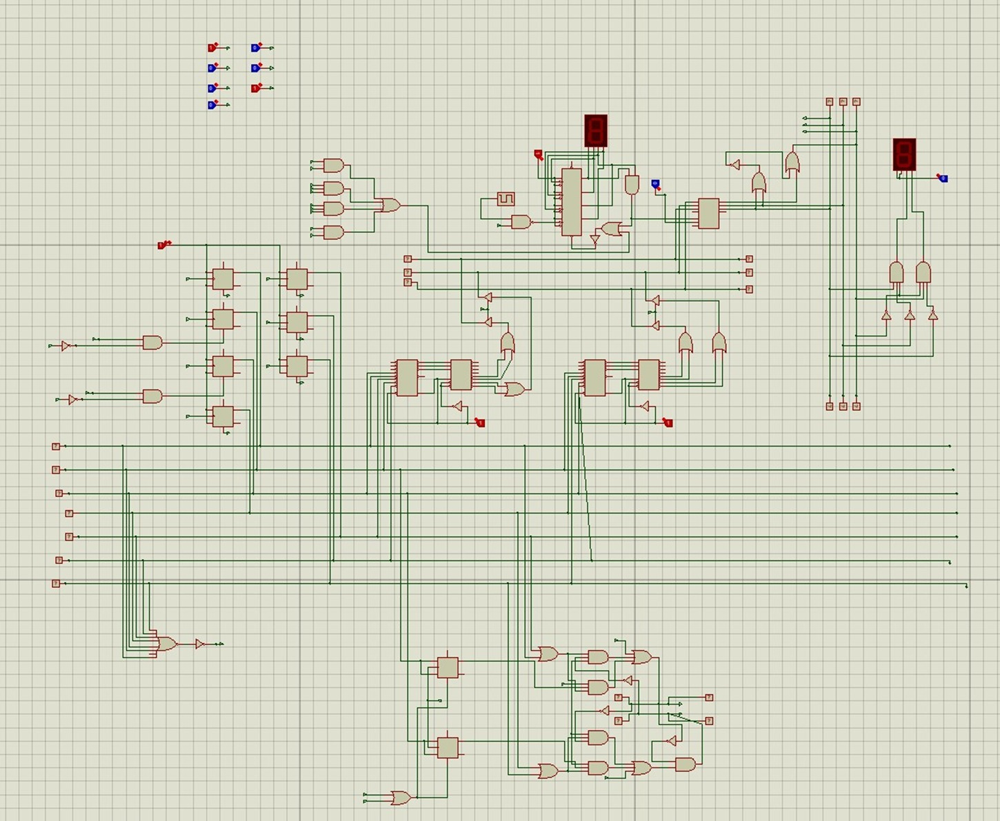
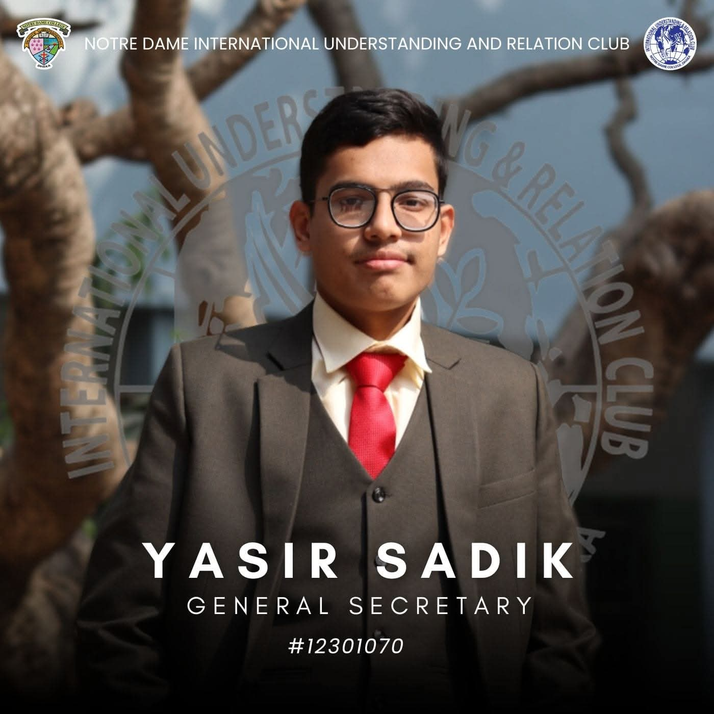
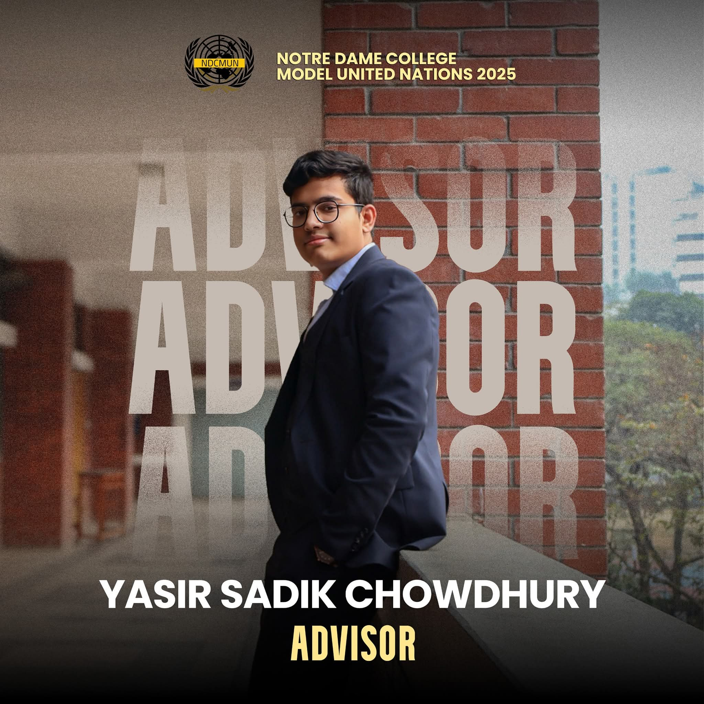

Hi, I'm Yasir Sadik Chowdhury
4th-semester CSE undergraduate at the Islamic University of Technology (IUT). A passionate learner with a growing interest in advanced mathematics, theoretical problem-solving, and software development, while balancing academic pursuits with real-world leadership as the founder of SAVORIA Restaurant.

About & Education
A blend of academic rigor, technical skills, and continuous personal growth
Profile Summary
I'm a passionate learner, always exploring and grasping new skills wherever I can. I'm committed to giving my best in everything I do and continuously improving myself. As a humble and adaptable individual, I welcome new challenges and see every mistake as an opportunity to grow.
Core Technical Interests
Soft Skills & Hobbies
Education Timeline
-
Sep 2024 - Present
BSc in Computer Science and Engineering
Islamic University of Technology, Gazipur, Dhaka
-
Feb 2022 - Jun 2023
Higher Secondary Certificate (HSC) - Science
Notre Dame College, Dhaka
-
Jan 2015 - Nov 2021
Secondary School Certificate (SSC) - Science
Chittagong Collegiate School, Chittagong
Academic Projects
Comprehensive assignments spanning OOP, System Analysis, Algorithms, and Digital Logic

CarbonDraw: An Educational Climate Action Deck Builder
A visual JavaFX project presented by Team EcoFx. The game features strategic infrastructure cards like Next-Gen Nuclear, Grid Scale Battery, Reforestation Initiatives, and Regenerative Agriculture to simulate environmental impact.

Ratatouille: The digital RAT under the chef's HAT
CSE 4408 System Analysis and Design project (Project Hail Savoria). Mapped stakeholder problems, candidate keys, and business workflows to design a comprehensive digital management system for the Savoria restaurant model.

PGCB Power Grid Load Shedding & Generation Mix Optimization
Submitted on August 16, 2026, for CSE 4403 (Algorithms). Investigated algorithmic optimization for Bangladesh's power grid, balancing load shedding and generation mix using computational logic.

Mini-SIS (Student Information System)
An IUT SIS reimplementation on a minor scale for the OOP lab. Developed collaboratively by Team Syntax Terrors (Rayat Bin Nasir, Afraz Ahmed, Nafi Abrar Chowdhury, and myself) utilizing advanced C++ features like static members and operator overloading.

Shorojontro (ষড়যন্ত্র)
CSE 4202 Structured Programming II project presentation. A strategic game engine featuring distinct characters (বীর বিক্রম, ব্রহ্মদৈত্য, জিনের বাদশাহ, ভলু ডাকাত, পটুকচন্দ্র) with unique abilities, integrated with C programming structures.

Digital Elevator System
Digital Logic Design (DLD) lab assignment featuring complex circuitry mapped in Proteus. Modeled state changes, logic gates, and simulated seven-segment outputs to mimic mechanical elevator routing.
Entrepreneurship
Bridging academic theory with real-world business execution
SAVORIA — Excellence in Culinary & Hospitality
Step into a world of gourmet excellence and refined elegance at SAVORIA. Experience a meticulously curated menu, world-class hospitality, and an immersive atmosphere for an unforgettable dining experience.
Extracurricular Activities
Consistent community engagement and organizational leadership

General Secretary
Notre Dame International Understanding and Relation Club
2023 - Oct 2024
Advisor & USG of Administration
NDCMUN25 (Advisor) | NDCMUN23 (USG)
Notre Dame CollegeEC PANEL
IUT Debating Society
2024 - 2025Event Organizer
Sagacity 3.0, NDC Intra MUN22
Notre Dame CollegeVolunteer
CodeRush 2025
IUT Computer SocietyExecutive Member
Collegiates Cultural Club
Aug 2020 - Aug 2021Get In Touch
Reach out for academic collaborations or inquiries
Phone
01600327467Location
IUT-Gazipur, Dhaka